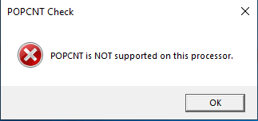
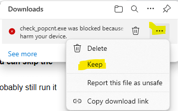
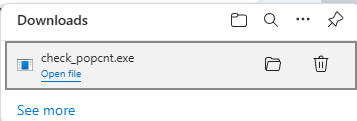
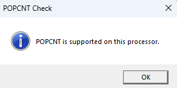

Download: POPCNT Checker
The Hackboto Tech Tips POPCNT Checker is really easy to use, just run it and it will tell you if your PC supports POPCNT.
What Does the POPCNT Checker Do?
The Hackboto Tech Tips POPCNT Checker is a small yet powerful program that will check if your PC supports the POPCNT CPU instruction set.
The POPCNT Checker can be handy for things like upgrading to Windows 11 on unsupported hardware, this is because one of the new requirements of the latest Windows 11 24H2 operating system is that your CPU supports POPCNT, if you upgrade and your PC does not support it, it will stop working.
Downloading the POPCNT Checker
You can download the check_popcnt.exe using the download button below, this should start the download process.
Download check_popcnt.exeNotice: You might find that the download is blocked, this is because it is a .exe program which has no publisher certification, this means that the browser cannot verify that the program is safe as it has not been created by an official software vendor.
If the download is blocked, you need to hover over the download and click on the three dots "...", you then need to click "Keep".
How do I use the POPCNT Checker?
The popcnt_checker.exe is really easy to use, you just need to run it and it will tell you if your computer supports the POPCNT instruction.
To run the popcnt_checker.exe, simply click "Open file" from the download menu or navigate to the download location and open it from there.
When you run the check_popcnt.exe program you should see a message that reads "POPCNT is supported on this processor", this means that your PC supports the POPCNT instruction and will be compatible with Windows 11 and other modern software applications and operating systems.
If your PC has this message "POPCNT is NOT supported on this processor", your PC does not support the POPCNT instruction.
Page Updated: 02/06/2024
Page Author: Hackboto